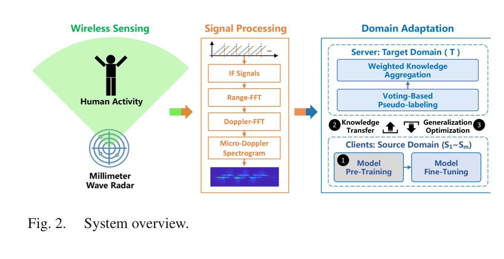
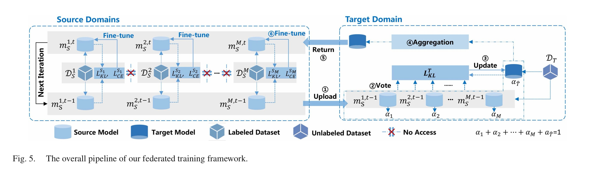
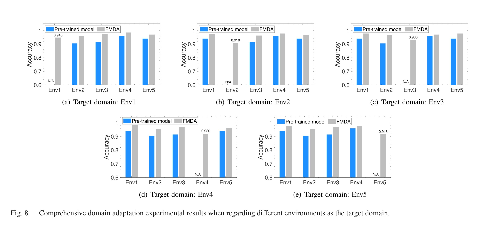
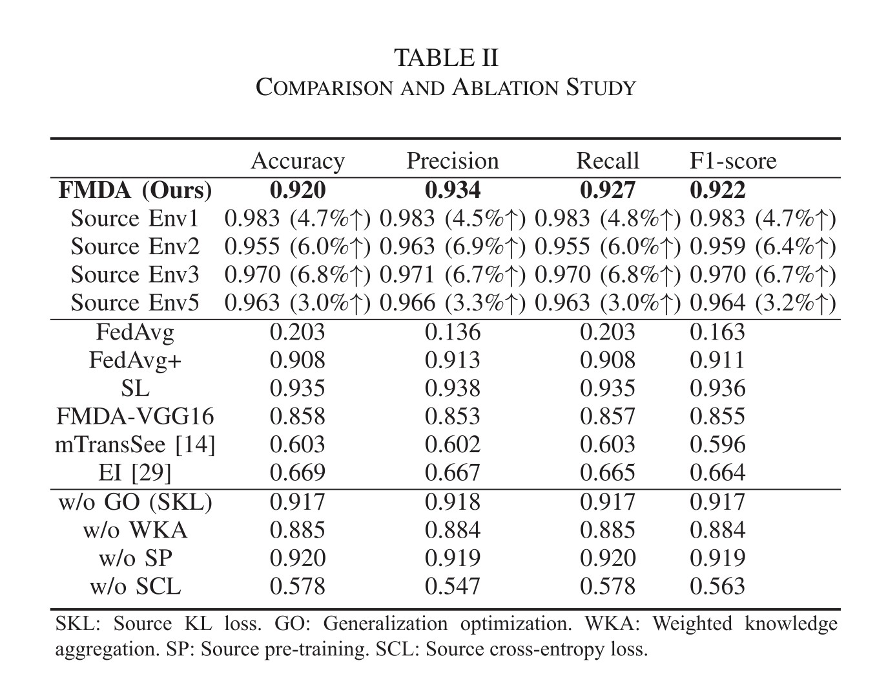
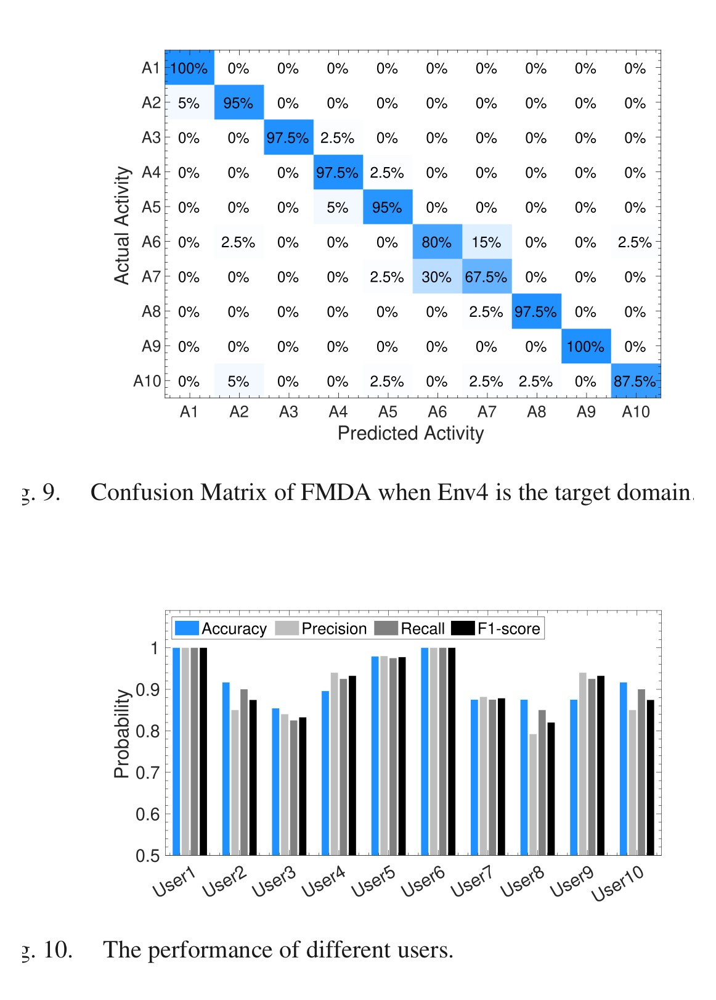

IEEE Transactions on Mobile Computing, 2025
Publication
Federated Multi-Source Domain Adaptation for mmWave-based Human Activity Recognition
Cui Zhao, Guotong Fang, Han Ding, Xinhui Liu, Fei Wang, Ge Wang, Kun Zhao, Zhi Wang, Wei Xi
FMDA adapts mmWave human activity recognition to new environments without target labels or centralized source data. It combines voting-based pseudo-labeling, contribution-aware aggregation, and generalization-gap optimization so multiple private source models can train a useful target-domain HAR model.
mmWave Domain Adaptation
FEIE, XJTU; SSE, XJTU
Overview
mmWave human activity recognition works well in controlled settings, but it is fragile under domain shift: a model trained in one room, with one group of users or one radar placement, can degrade when moved to another environment. Standard domain adaptation assumes that source and target data can be centralized, which is often unrealistic for RF sensing because wireless signals may encode location, body, motion, trajectory, and other private behavioral information.
FMDA studies a more deployable setting. Several labeled source domains keep their raw mmWave data local, while an unlabeled target domain learns from their model parameters. The goal is to train a target HAR model without target labels and without moving source samples to a central server.
Main Contributions
- Formulates mmWave HAR transfer as a federated multi-source domain adaptation problem.
- Uses voting-based pseudo-labeling to extract target-domain supervision from multiple source models.
- Estimates each source model's contribution and performs weighted knowledge aggregation, reducing the risk of negative transfer from weakly related domains.
- Introduces generalization-gap optimization so source and target models become flatter and more domain-agnostic during federated training.
- Implements the system on a COTS
AWR1443BOOSTmmWave radar and evaluates it across five real indoor environments.
System And Data
The sensing pipeline uses FMCW mmWave radar. Raw RF reflections are converted through IF signal processing, Range-FFT, Doppler-FFT, and micro-Doppler spectrogram generation. The micro-Doppler representation is then fed to the domain adaptation DNN.

The prototype uses an AWR1443BOOST radar operating at 77-81 GHz with a DCA1000EVM collector. The experiments cover five indoor domains: hall, laboratory, corridor, break room, and corner. The dataset includes 10 volunteers, 10 predefined HCI gestures, and 20 repetitions per activity per volunteer, for 10,000 samples balanced across environments.
The source and target models share a simple structure: a ResNet50 feature extractor with batch normalization plus a fully connected activity classifier. Training uses SGD with learning rate 0.001, batch size 16, and a voting confidence threshold that starts at 0.75 and rises to 0.98.
Method Details
FMDA's training loop has three moving parts.
First, each source model predicts labels for the unlabeled target samples. The system admits pseudo-labels only when the source predictions are confident enough, so low-confidence consensus does not dominate target training.
Second, FMDA does not simply average source parameters. It estimates a quality score for each source by measuring how much that source contributes to admitted target knowledge. Sources that better support the target domain receive larger aggregation weights.
Third, after target aggregation, the updated target feature extractor is sent back to source domains. Each source then fine-tunes with a push-and-pull objective: KL divergence guides it toward the aggregated target representation, while cross-entropy keeps it from forgetting its own labeled data distribution. This is the mechanism behind the paper's claim that source participants also benefit from joining the federated process.

Results
Across five target-environment choices, FMDA consistently improves over pre-trained source models and reaches about 91.0-94.8% accuracy depending on the target domain. The authors use Env4 as the default target in later experiments because it is narrow and multipath-heavy, making it a representative challenging case.

In the default Env4 target setting, FMDA reaches 92.0% accuracy, 93.4% precision, 92.7% recall, and 92.2% F1-score. This is close to supervised learning on target labels (93.5% accuracy) while avoiding target annotations. It also strongly outperforms simple federated averaging, which reaches only 20.3% accuracy in this setting.
| Method / Variant | Accuracy | Precision | Recall | F1-score |
|---|---|---|---|---|
| FMDA | 0.920 | 0.934 | 0.927 | 0.922 |
| FedAvg | 0.203 | 0.136 | 0.203 | 0.163 |
| FedAvg+ | 0.908 | 0.913 | 0.908 | 0.911 |
| Supervised learning | 0.935 | 0.938 | 0.935 | 0.936 |
| FMDA-VGG16 | 0.858 | 0.853 | 0.857 | 0.855 |
| mTransSee | 0.603 | 0.602 | 0.603 | 0.596 |
| EI | 0.669 | 0.667 | 0.665 | 0.664 |

The ablation study shows why the full design matters. Removing generalization optimization slightly lowers target performance and reduces source-side gains. Removing weighted knowledge aggregation causes a larger drop, matching the intuition that different source domains should not be treated equally. Removing source pre-training mainly slows training, while removing source cross-entropy supervision severely hurts performance.
Practical Observations
FMDA performs well, but the paper is careful about the remaining challenges. Similar left/right gestures are still hard to distinguish from micro-Doppler alone; the confusion matrix shows that sliding the arm left is often mistaken for sliding the arm right. User habits also matter: per-user accuracy ranges from 85.4% to 100% in the main evaluation.

The micro-benchmark experiments add two useful deployment lessons. Increasing the number of source domains has only a modest effect when all source domains are already informative: two sources reach 91.0%, while four sources reach 92.0%. Under new user-radar distances, FMDA stays near 80% performance, and under changed orientations it stays near 75%, still substantially better than retraining source-only models across domains.
Takeaways
- The key problem is not only mmWave HAR accuracy, but privacy-compatible cross-domain adaptation.
- Pseudo-label voting gives the unlabeled target domain a training signal, but contribution-aware weighting is needed to avoid negative transfer.
- Returning the updated target model to sources makes collaboration mutually useful, not just target-centric.
- The remaining bottlenecks are domain geometry, user-specific motion habits, and ambiguous gestures that look similar in micro-Doppler space.
Resources
{kind=link}
{kind=link}
{kind=link}
Citation
@article{zhao2025federated,
title = {Federated Multi-Source Domain Adaptation for mmWave-Based Human Activity Recognition},
author = {Zhao, Cui and Fang, Guotong and Ding, Han and Liu, Xinhui and Wang, Fei and Wang, Ge and Zhao, Kun and Wang, Zhi and Xi, Wei},
journal = {IEEE Transactions on Mobile Computing},
volume = {24},
number = {8},
pages = {7283--7296},
year = {2025},
doi = {10.1109/TMC.2025.3549705}
}